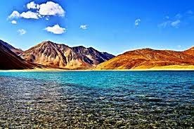
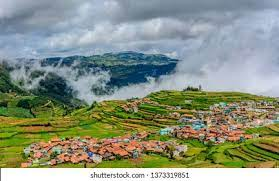

Ladakh
Ladakh, large area of the northern and eastern Kashmir region, northwestern Indian subcontinent. Administratively, Ladakh is divided between Pakistan (northwest), as part of Gilgit-Baltistan, and India (southeast), as part of Ladakh union territory (until October 31, 2019, part of Jammu and Kashmir state); in addition, China administers portions of northeastern Ladakh.
More places to visit in Ladakh
- Pangong Tso Lake
- Thiksey Monastery
- Khardung-la Pass
Munnar

Munnar - breathtakingly beautiful - a haven of peace and tranquility - the idyllic tourist destination in God's own country. Set at an altitude of 6000 ft in Idukki district, Munnar was the favored summer resort of the erstwhile British rulers in the colonial days. Unending expanse of tea plantations pristine valleys and mountains exotic species of flora and fauna in its wild sanctuaries and forests aroma of spice scented cool air yes! This beautiful destination has all these and more. It's the place you would love to visit it's the place you would wish never to leave.
- Chokramudi Peak, Munnar
- Eravikulam National Park, Munnar
- Kundala Lake, Munnar
Ooty
Ooty is a scenic hill town in southern India. It is surrounded by the Nilgiri Hills and is popularly known as the Queen of Hills. But when is the best time to visit Ooty? Climate (if any) is the only serious deterrent which might spoil your travel plans to Ooty. But regarding climate too, Ooty has something different to offer all throughout the year. The summer is perhaps the best time to visit the place, if you are planning to visit all the tourist spots, including some adventurous treks and hand gliding.
More places to visit in Ooty
- Avalanche Lake
- Ooty Lake
- Emerald Lake